전기철도기사 (2013-03-10 기출문제)
1과목: 전기철도공학
1. 교류 급전방식에서 스코트변압기의 1차 전압을 66[kV], 2차 전압을 25[kV]라고 할 때 T상의 1차 전투 I1 [A]은? (단, 1, 2차 전류를 I1, I2 라 한다.)
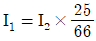
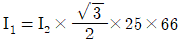
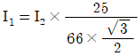
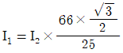
(정답률: 알수없음)

2. 직류 고속도차단기중 양방향 고속도차단가의 역할은?
- 정상전류와 동일방향의 과전류에 대해 자동차단을 수행하는 고속도차단기이다.
- 정상전류와 역방향의 전류에 대해 자동차단을 수행하는 고속도차단기이다.
- 정ㆍ역 방향의 전류에 대해 자동차단을 수행하는 고속도차단기이며 주로 급전타이포스트에 사용된다.
- 정류기의 역점호시나 회전변류기 플래쉬 오버발생시 전류를 차단하기 위해 사용된다.
(정답률: 알수없음)
3. 강체 전차선의 합성저항 Ro를 구하는 식은? (단, Ra: 알루미늄선의 저항. Rc: 전차선의 저항이다.)
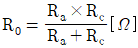
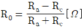
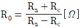
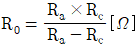
(정답률: 알수없음)
4. 교류 전차선로 건넘선장치의 교차장치 시설방법에 대한 설명으로 맞지 않는 것은?
- 교차장치는 운전 빈도가 높은 주요선을 하부로 시설한다.
- 교차장치에서 곡선당김금구는 상대되는 전선의 외측에 설치한다.
- 교차장치에서 본선과 부본선이 상대측 궤도중심에서 전차선까지 거리가 300[mm] 되는 지정은 수평을 유지한다.
- 교차장치 교차점에서 본선축 궤도중심과 교차측 전차선간 간격600[mm]내에 크램프를 설치한다.
(정답률: 알수없음)
5. 다음 중 교류 강체전차선로(R-bar) 방식에 대한 설명으로 맞지 않는 것은?
- 이행구간에서 가공전차선이 터널 내에 들어와 강체 전차선으로 바뀌어 지는 부분에 설치한 장치는 직접 유도장치이다.
- 구분장치, 건넘선장치 등의 끝부분에 대한 단말처리는 앤드 어프로치(end approach)이다.
- 두 개의 확장장치 사이의 중앙흐름을 저지하는 가공전차선로의 흐름장치와 같은 역할을 하며 제한점이라고 한다.
- 신축장치는 가능한 한 직선구간에 설치하여야 하여 1개의 섹션 길이는 400~600[m]를 기준으로 한다.
(정답률: 알수없음)
6. 주전동기의 단자전압이 1200V, 전류가 300A인 경우, 전기차의 출력은 몇 [kW] 인가? (단, 주전동기의 효율은 0.9, 전동기의 대수는 3대이다.)
- 648
- 810
- 972
- 1134
(정답률: 알수없음)
7. 열차의 차체 중량이 75톤이고, 동륜상의 점착중량이 50톤인 기관차가 열차를 끌 수 있는 점착 견인력은 몇 kgf 인가? (단, 궤조의 점착계수는 0.3 으로 한다.)
- 5000
- 10000
- 15000
- 20000
(정답률: 알수없음)
8. 가공전차선로에서 운전속도가 90[km/h]이고 파동전파속도가 110[km/h]일 때 전차선로의 동적작용을 알 수 있는 도플러계수 α는 얼마인가?
- 0.⑤
- 0.1
- 0.2
- 0.5
(정답률: 알수없음)
9. 파동전파속도 C[m/sec]를 나타내는 식으로 맞는 것은? (단, T: 전차선의 장력 [N], ρ: 단위길이당 질량[kg/m])
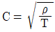
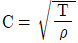
- C=T×ρ
- C=T/ρ
(정답률: 알수없음)
10. 다음 중 흡상변압기의 역할에 대한 설명으로 맞는 것은?
- 전압강하를 보상한다.
- 역률을 개선시킨다.
- 전차선의 절연을 향상시킨다.
- 통신유도장해를 경감한다.
(정답률: 알수없음)
11. 교류 AT 급전방식 커티너리 가선방식에서 애자의 섬락보호를 위하여 애자의 부측 또는 빔 등을 연접하여 귀선레일에 접속하는 가공전선의 명칭은?
- 가공지선
- 피뢰도선
- 지락도선
- 보호선
(정답률: 알수없음)
12. 교류 급전회로의 3상 전원의 단락용량을 3상 임퍼던스 Z0로 환산한 식은? (단, V: 기준전압 [kV], Ps: 단락용량[MVA]이다.)
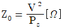
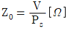
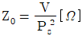
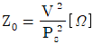
(정답률: 알수없음)
13. 교류 R-bar 방식 강체 전차선로에서 온도변화로부터 자동신축조절을 위해 설치하는 확장장치는 몇 [m]를 기준으로 설치하는가?
- 200[m] ~ 400[m]
- 400[m] ~ 600[m]
- 600[m] ~ 800[m]
- 800[m] ~ 1000[m]
(정답률: 알수없음)
14. 경간 60[m]. 구배 3[%]으로 전차선이 낮아진다면, 전차선 높이가 5.2[m]인 경우 다음 전주의 전차선 높이[m]는?
- 4.52
- 5.02
- 5.52
- 6.02
(정답률: 알수없음)
15. 직류급전방식의 전압강하 경감대책으로 맞지 않는 것은?
- 급전선을 설치하여 선로저항을 경감한다.
- 전압강하가 크게 되는 구간에는 변전소 거리를 멀게 하여 전압강하를 경감 한다.
- 복선구간에서는 급전타이포스트 등을 설치하고 상ㆍ하선의 급전선을 균압하여 병렬로 사용한다.
- 승압기를 삽입하여 전압강하를 보상한다.
(정답률: 알수없음)
16. 강체전차선로 T-Bar에서 롱이어(Long Ear)란?
- 전차선을 T-Bar에 밀착시켜 연속적으로 고정시키는 연결금구이다.
- 레알 중앙점에 콘크리트 구조물을 타설할 때 설치되는 금구이다.
- 전차선과 전차선을 연결하는 조인트이다.
- 지상설비와 지하설비를 연결해주는 설비이다.
(정답률: 알수없음)
17. 전차선로의 탄성률에 대한 설명이 옳은 것은?
- 경간이 짧을수록 커지며. 전차선 및 조가선의 장력이 작을수록 커진다.
- 경간이 클수록 작아지며, 전차선 및 조가선의 장력이 작을수록 작아진다.
- 경간이 짧을수록 작아지며, 전차선 및 조기선의 장력이 클수록 작아진다.
- 경간과 전차선의 장력이 클수록 커지며, 조가선의 장력이 클수록 작아진다.
(정답률: 알수없음)
18. 고속철도에서 가공전차선의 표준높이[mm]로 맞는 것은?
- 레일면상 5080
- 레일면상 5100
- 레일면상 5200
- 레일면상 5300
(정답률: 알수없음)
19. 활차비 1:4의 경우 장력추 유효동작 범위가 3,600[mm]이면 전차선의 신축허용 범위[mm]는?
- 600
- 900
- 1200
- 1800
(정답률: 알수없음)
20. 두 전차선 상호에 평행 부분을 일정간격으로 이격시켜 공기절연을 이용한 동상용 절연 구분 장치는?
- 에어섹션
- 에어죠인트
- 섹션인슐레이터
- 인류장치
(정답률: 알수없음)
2과목: 전기철도 구조물공학
21. 그림과 같은 빗금친 단면(A=단면적)의 도심 y를 구한 값은?
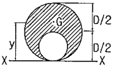
- 5D/12
- 6D/12
- 7D/12
- 8D/12
(정답률: 알수없음)
22. 주로 기둥과 같이 압축력을 받는 부재희 단면설계에 쓰이는 좌굴저항계수로서, 그 값이 클 때 저항에 대한 효율이 커지는 부재단면의 요소는?
- 단면 1차 모멘트
- 단면 2차 모멘트
- 단면 2차 반지름
- 단면 계수
(정답률: 알수없음)
23. a=60°, P1=30kpf, P2=20kgf 일 때 힘의 합력[kgf]은 약 얼마인가?
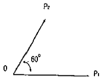
- 43.6
- 49.2
- 50
- 56.2
(정답률: 알수없음)
24. 지름 D, 길이 ℓ인 원기둥의 세장비(λ=L/r)는?
- 4ℓ/D
- 8ℓ/D
- 4D/ℓ
- 8D/ℓ
(정답률: 알수없음)
25. 가공전차선로에서 급전선에 사용되는 경동선의 안전율은 인장하중에 대한 안전율이 얼마 이상이어야 하는가? (단, 케이블인 경우는 제외한다.)
- 2.0
- 2.2
- 2.6
- 3.0
(정답률: 알수없음)
26. 수평반력, 수직반력, 모멘트반력 등 3개의 반력이 발생하는 지점은?
- 이동지점
- 회전지점
- 힌지지점
- 고정지점
(정답률: 알수없음)
27. 다음 그림과 같은 라멘 구조물의 부정정 차수는?
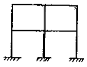
- 8
- 12
- 16
- 20
(정답률: 알수없음)
28. 직사각형(폭 16cm, 높이 18cm) 단연과 같은 단면계수를 갖기 위해서 높이를 24cm로 할 때 폭의 크기[cm]는?
- 7
- 9
- 12
- 15
(정답률: 알수없음)
29. 다음 중 구조물의 안정 판별 시 외적으로 안정인 경우에 대한 설명으로 맞는 것은?
- 외력이 작용할 때 구조물의 위치가 변하는 경우
- 외력이 작용할 때 구조물의 형태가 변하는 경우
- 외력이 작용할 때 구조물의 위치가 변하지 않은 경우
- 외력이 작용할 때 구조물의 형태가 변하지 않은 경우
(정답률: 알수없음)
30. 전차선로 속도등급이 시속250킬로급 이하인 커티너리식 가공전차선로에서 곡선반경 R=800m인 경우 지지물의 최대경간[m]은?
- 50
- 45
- 40
- 30
(정답률: 알수없음)
31. 다음 중 특정 갈이의 선분을 회전시킬 때 생기는 표면적을 계산할 때 이용하는 것은?
- 베티의 정리
- 라미의 정리
- 뉴톤의 정리
- 파프스의 정리
(정답률: 알수없음)
32. 지표면에서 높이가 L m인 단독지지주에 w kgf/m의 수평분포하중이 작용하는 경우 지면과의 경계점 모멘트 M은 몇 [kgfㆍm] 인가?
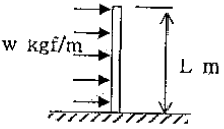
- wㆍL2
- (1/2)wㆍL2
- wㆍL
- (1/2)wㆍL
(정답률: 알수없음)
33. 질량이 3톤인 물체에 작용하는 중력은 몇 N 이 되는가?
- 19400
- 23500
- 29400
- 33000
(정답률: 알수없음)
34. 지름 10mm, 길이 15m의 강철봉에 무게 800kg의 물체를 매어 달았을 때 강철봉이 늘어난 길이 [cm]는? (단, Es=2.1×106kg/cm2이다.)
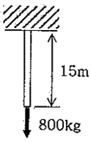
- 약 0.43
- 약 0.53
- 약 0.73
- 약 0.93
(정답률: 알수없음)
35. "A"점의 휨모멘트[kgfㆍm]는?
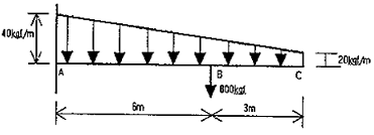
- 3880
- 4880
- 5880
- 6880
(정답률: 알수없음)
36. 단면 1차 모멘트 [M3]와 같은 차원(Dimension)을 가자는 것은?
- 단면 상승모멘트
- 단면계수
- 단면 2차 모멘트
- 회전반지름
(정답률: 알수없음)
37. 단면적 8cm2, 길이 2m의 강선에 600kg의 하중을 가하였더니 0.6cm가 늘어났다. 이때의 종탄성계수(E)[kgf/cm2]는?
- 1.5 × 105
- 2.0 × 105
- 2.5 × 105
- 3.0 × 105
(정답률: 알수없음)
38. 조가선과 전차선의 각 장력을. 1000kgf, 경간을 50m로 할 때 직선 선로에서 지그재그 편위에 의한 조가선과 전차선의 수평장력[kgf]은? (단, 전차선의 편위는 200mm이다.)
- 약 12
- 약 14
- 약 16
- 약 18
(정답률: 알수없음)
39. 용융아연도금을 한 ㄱ형강 등의 강재로 전주 또는 고정빔 등에 취부하여 급전선, 부급전선, 보호선 등을 지지하기 위한 구조물은?
- 완금
- 브래킷
- 하수강
- 평행률
(정답률: 알수없음)
40. 빔의 길이가 몇 [m] 이상인 경우 스팬선 빔으로 시공하는 것을 원칙으로 하는가?
- 30
- 35
- 38
- 45
(정답률: 알수없음)
3과목: 전기자기학
41. ▽ㆍi=0에 대한 설명이 아닌 것은?
- 도체 내에 흐르는 전류는 연속이다.
- 도체 내에 흐르는 전류는 일정하다.
- 단위시간당 전하의 변화가 없다.
- 도체 내에 전류가 흐르지 않는다.
(정답률: 알수없음)
42. 1[kV]로 충전된 어떤 콘덴서의 정전에너지가 1[J]일 때 이 콘덴서의 크기는 몇 [μF] 인가?
- 2[μF]
- 4[μF]
- 6[μF]
- 8[μF]
(정답률: 알수없음)
43. 진공 중에 선전하 밀도 +λ[C/m]의 무한장 직선전하 A와 -λ[C/m]의 무한장 직선전하 B가 d[m]의 거리에 평행으로 놓여 있을 때, A에서 거리 d/3[m]되는 점의 전계의 크기는 몇 [V/m] 인가?
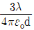
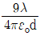
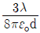
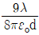
(정답률: 알수없음)
44. 정전용량 C[F]인 평행판 공기콘덴서에 전극간격의 두께 1/2인 유리판을 전극에 평행하게 넣으면 이때의 정전용량은 몇 [F] 인가? (단, 유리의 비유전률은 εs라 한다.)
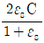
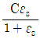
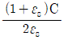
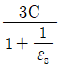
(정답률: 알수없음)
45. 자성체 경계면에 전류가 없을 때의 경계조건으로 틀린 것은?
- 전속밀도 D의 법선성분 D1N=D2N=μ2/μ1
- 자속밀도 B의 법선성분 B1N=B2N
- 자계 H의 접선성분 H1T=H2T
- 경계면에서의 자력선의 굴절 tanθ1/tanθ2=μ1/μ2
(정답률: 알수없음)
46. 그림과 같이 단면적이 균일한 환상철심에 권수 N1 인 A코일과 권수 Nz 인 B코일이 있을 때 A코일의 자기인덕턴스가 L1[H]라면 두 코일의 상호인덕턴스 M은 몇 [H]인가? (단, 누설자속은 0 이라고 한다.)
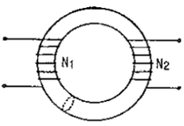
- L1N1/N2
- N2/L1N1
- N1/L1N2
- L1N2/N1
(정답률: 알수없음)
47. 자기유도계수 L의 계산방법이 아닌 것은? (단, N: 권수, Φ: 자속, I: 전류, A: 벡터포텐샬, i: 전류밀도, B: 자속밀도, H: 자계의 세기이다.)
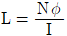
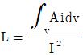
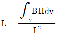
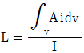
(정답률: 알수없음)
48. 압전기 현상에서 분극이 응력에 수직한 방향으로 발생하는 현상은?
- 종효과
- 횡효과
- 역효과
- 직접효과
(정답률: 알수없음)
49. 다음 중 스토크스(stokes)의 정리는?
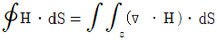
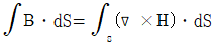
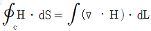
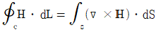
(정답률: 알수없음)
50. 그림과 같은 공심 토로이드 코일의 권선수를 N배하면 인덕턴스는 몇배 되는가?
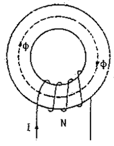
- N-2
- N-1
- N
- N2
(정답률: 알수없음)
51. 전위가 VA인 A점에서 Q[C]의 전하를 전계와 반대 방향으로 l[m]이동시킨 점 P의 전위[V]는? (단, 전계 E는 일정하다고 가정한다.)
- VP=VA-El
- VP=VA+El
- VP=VA-EQ
- VP=VA+EQ
(정답률: 알수없음)
52. 그림과 같은 모양의 자화곡선을 나타내는 자성체 막대를 충분히 강한 평등자계 중에서 매분 3000회 회전시킬 때 자성체는 단위체적당 매초 약 몇 [kcal]의 열이 발생하는가? (단. Br= 2[Wb/m2], HL= 500[AT/m], B=μH 에서 μ는 일정하지 않음)
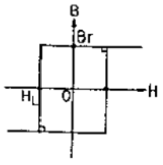
- 11.7
- 47.6
- 70.2
- 200
(정답률: 알수없음)
53. 환상 철심에 강은 코일에 5[A]의 전류를 흘려 2000[AT]의 기자력을 생기게 하려면 코일의 권수(회)는 얼마로 하여야 하는가?
- 10000
- 500
- 400
- 250
(정답률: 알수없음)
54. 전기쌍극자에 의한 전계의 세기는 쌍극자로부터의 거리 r에 대해서 어떠한가?
- r 에 반비례한다.
- r2 에 반비례한다.
- r3 에 반비례한다.
- r4 에 반비례한다.
(정답률: 알수없음)
55. Z축의 정방향(+방향)으로 10πax[A]가 흐를 때 이 전류로부터 5[m]지점에 발생되는. 자계의 세기 H[A/m]는?
- H=-ax
- H=aΦ
- H=(1/2)aΦ
- H=-aΦ
(정답률: 알수없음)
56. 전위함수가 V=2x+5yz+3 일 때, 점(2, 1, 0)에서의 전계의 세기는?
- -2i-5j-3k
- i+2j+3k
- -2i-5k
- 4i+3k
(정답률: 알수없음)
57. 그림과 같은 전기 쌍극자에서 P점의 전계의 세기는 [V/m] 인가?
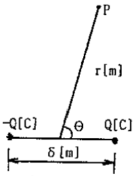
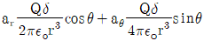
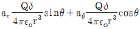
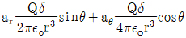
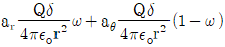
(정답률: 알수없음)
58. 반지름 2[mm]의 두 개의 무한히 긴 원통 도체가 중심 간격 2[m]로 진공 중에 평행하게 놓여 있을 때 1[km]당의 정전용량은 약 및 [μF] 인가?
- 1×10-3[μF]
- 2×10-3[μF]
- 4×10-3[μF]
- 6×10-3[μF]
(정답률: 알수없음)
59. 단면적 1000[mm2] 길이 600[mm] 인 강자성체의 철심에 자속밀도 B=1[Wb/m2]를 만들려고 한다. 이 철심에 코일을 감아 전류를 공급하였을 때 발생되는 기자력[AT]은?
- 6×10-4
- 6×10-3
- 6×10-2
- 6×10-1
(정답률: 알수없음)
60. 다음 중 금속에서의 침투깊이(Skin Depth)에 대한 설명으로 옳은 것은?
- 같은 금속을 사용할 경우 전자파의 주파수를 증가시키면 침투깊이가 증가한다.
- 같은 주파수의 전자파를 사용할 경우 전도율이 높은 금속을 사용하면 침투깊이가 감소한다.
- 같은 주파수의 전자파를 사용할 경우 투자율 값이 작은 금속을 사용하면 침투깊이가 감소한다.
- 같은 금속을 사용할 경우 어떤 전자파를 사용하더라도 침투깊이는 변하지 않는다.
(정답률: 알수없음)
4과목: 전력공학
61. 현수애자 4개를 1련으로 한 66[kV] 송전선로가 있다. 현수애자 1개의 절연저항이 2000[MΩ]이라면, 표준경간을 200[m]로 할 때 1[km]당의 누설 컨덕턴스[℧]는?
- 0.63×10-9
- 0.93×10-9
- 1.23×10-9
- 1.53×10-9
(정답률: 알수없음)
62. 연가를 해도 효과가 없는 것은?
- 직렬공진의 방지
- 통신선의 유도장해 감소
- 대지정전용량의 감소
- 선로정수의 평형
(정답률: 알수없음)
63. 단락 보호용 계전기의 범주에 가장 적합한 것은?
- 한시 계전기
- 탈조 보호 계전기
- 과전류 계전기
- 주파수 계전기
(정답률: 알수없음)
64. 감속재의 온도 계수란?
- 감속재외 시간에 대한 온도 상승률
- 반응에 아무런 영향을 주지 않는 계수
- 감속재의 온도 1[℃] 변화에 대한 반응도의 변화
- 열중성자로에서 양(+)의 값을 갖는 계수
(정답률: 알수없음)
65. 반지름이 1.2[cm]인 전선 1선을 왕로로 하고 대지를 귀로로 하는 경우 왕복회로의 총 인덕턴스는 약 몇 [mH/km]인가? (단, 등가대지면의 깊이는 600[m]이다.)
- 2.4025[mH/km]
- 2.3525[mH/km]
- 2.2639[mH/km]
- 2.2139[mH/km]
(정답률: 알수없음)
66. 개폐장치 중에서 고장전류의 차단능력이 없는 것은?
- 진공차단기
- 유입개폐기
- 리클로저
- 전력퓨즈
(정답률: 알수없음)
67. 동기조상기(A)와 전력용콘덴서(B)를 비교한 것으로 옳은 것은?
- 조정 : (A)는 계단적, (B)는 연속적
- 전력손실 : (A)가 (B)보다 적음
- 무효전력 : (A)는 진상ㆍ지상 양용, (B)는 진상용
- 시송전 : (A)는 불가능, (B)는 가능
(정답률: 알수없음)
68. 직류송전방식에 비하여 교류송전방식의 가장 큰 이정은?
- 선로의 리액턴스에 의한 전압강하가 없으므로 장거리 송전에 유리하다.
- 변압이 쉬워 고압송전에 유리하다.
- 같은 절연에서 송전전력이 크게 된다.
- 지중송전의 경우, 충전전류와 유전체손을 고려하지 않아도 된다.
(정답률: 알수없음)
69. 송전선로에서 이상전압이 가장 크게 발생하기 쉬운 경우는?
- 무부하 송전선로를 폐로하는 경우
- 무부하 송전선로를 개로하는 경우
- 부하 송전선로를 폐로하는 경우
- 부하 송전선로를 개로하는 경우
(정답률: 알수없음)
70. 3상용 차단기의 정격 차단용량은?
- √3×정격전압×정격차단전류
- √3×정격전압×정격전류
- 3×정격전압×정격차단전류
- 3×정격전압×정격전류
(정답률: 알수없음)
71. 그림과 같은 회로에 있어서의 합성 4단자 정수에서 Bo 의 값은?
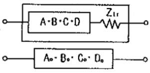
- Bo=B+Zir
- Bo=A+BZir
- Bo=C+DZir
- Bo=B+AZir
(정답률: 알수없음)
72. 다음 중 동작 시간에 따른 보호 계전기의 분류와 그 설명으로 틀린 것은?
- 순한시 계전기는 설정된 최소 작동 전류 이상의 전류가 흐르면 즉시 작동하는 것으로 한도를 넘은 양과는 관계가 없다.
- 정한시 계전기는 설정된 값 이상의 전류가 흘렀을 때 작동 전류의 크기와는 관계없이 항상 일정한 시간 후에 작동하는 계전기이다.
- 반한시 계전기는 작동시간이 전류값의 크기에 따라 변하는 것으로 전류값이 클수록 느리게 동작하고 반대로 전류값이 작아질수록 빠르게 작동하는 계전기이다.
- 반한시성 정한시 계전기는 어느 전류값까지는 반한시성이지만 그 이상이 되면 정한시로 작동하는 계전기이다.
(정답률: 알수없음)
73. 배전선로에서 사고범위의 확대를 방지하기 위한 대책으로 적당하지 않은 것은?
- 배전계통의 루프화
- 선택접지계전방식 채택
- 구분개폐기 설치
- 선로용 콘덴서 설치
(정답률: 알수없음)
74. 수전단을 단락한 경우 송전단에서 본 임피던스는 300[Ω]이고 수전단을 개방한 경우에는 1200[Ω]이었다. 이 선로의 특성임퍼던스는?
- 600[Ω]
- 900[Ω]
- 1200[Ω]
- 1500[Ω]
(정답률: 알수없음)
75. 전력계통에서 인터록(interlock)의 설명으로 알맞은 것은?
- 부하 통전시 단로기를 열 수 있다.
- 차단기가 열려 있어야 단로기를 닫을 수 있다.
- 차단기가 닫혀 있어야 단로기를 열 수 있다.
- 차단기의 접점과 단로기의 접점이 기계적으로 연결되어 있다.
(정답률: 알수없음)
76. 수차의 조속기가 너무 예민하면 어떤 현상이 발생되는가?
- 전압변동이 작게 된다.
- 수압상승률이 크게 된다.
- 속도변동률이 작게 된다.
- 탈조를 일으키게 된다.
(정답률: 알수없음)
77. 연간 전력량이 E[kWh]이고, 연간 최대전력이 W[kW]인 연부하율은 몇 [%] 인가?
- (E/W)×100
- (W/E)×100
- (8760W/E)×100
- (E/8760W)×100
(정답률: 알수없음)
78. 발전기 출력 PG[kW], 연료 소비량 B[kg], 연료의 발열량 H[kcal/kg]일 때 이 화력발전의 열효율은 몇 [%]인가?
- (980PG/HㆍB)×100
- (980HB/PG)×100
- (860HB/PG)×100
- (860PG/HㆍB)×100
(정답률: 알수없음)
79. 전력계통의 안정도 향상 대책으로 옳지 않은 것은?
- 전압변동을 크게 한다.
- 고속도 재폐로 방식을 채용한다.
- 계통의 직렬 리액턴스를 낮게 한다.
- 고속도 차단 방식을 채용한다.
(정답률: 알수없음)
80. 부하전력, 선로길이 및 선로손실이 동일할 경우 전선동량이 가장 적은 방식은?
- 3상 3선식
- 3상 4선식
- 단상 3선식
- 단상 2선식
(정답률: 알수없음)